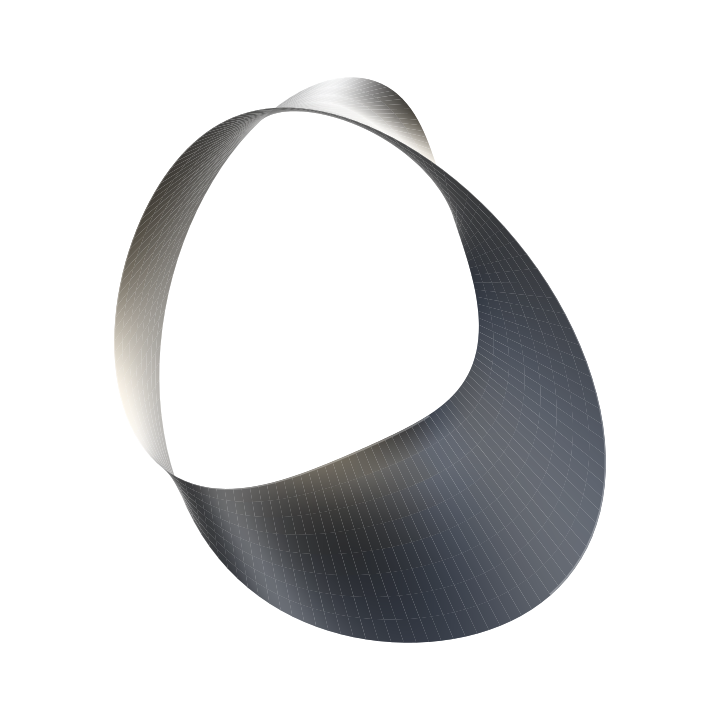

삼성청년 SW·AI 아카데미 (SSAFY)
Web Java 전공반 · 1학기 교육 이수
Java 기반 풀스택 웹 개발과 AI 활용 교육. 자료구조·알고리즘, 객체지향 프로그래밍, Spring Boot·MyBatis REST API, Vue.js, SQL·데이터베이스 모델링을 학습했습니다.
생성형 AI·프롬프트 엔지니어링, AI 코딩 도구, LangChain·AI Agent·MCP 기반 서비스 개발도 학습했습니다.

밀린 시세를 복구하는 트레이딩 봇부터 웹캠·생체 신호를 모으는 데이터 파이프라인까지. 문제의 원인을 구조에서 찾고, 동작을 테스트로 확인합니다.
EDUCATION & ACHIEVEMENTS
소프트웨어 전공과 SSAFY 교육을 바탕으로 웹 개발, 데이터 처리, AI 서비스 개발 역량을 쌓고 있습니다.
Web Java 전공반 · 1학기 교육 이수
Java 기반 풀스택 웹 개발과 AI 활용 교육. 자료구조·알고리즘, 객체지향 프로그래밍, Spring Boot·MyBatis REST API, Vue.js, SQL·데이터베이스 모델링을 학습했습니다.
생성형 AI·프롬프트 엔지니어링, AI 코딩 도구, LangChain·AI Agent·MCP 기반 서비스 개발도 학습했습니다.
졸업 · 학점 4.1 / 4.5 · 총 140학점 이수
인문 계열 · 졸업
삼성전자 주식회사
Web Java 전공반 1학기 CS·Java·Web/Framework·AI·DB 이론 및 실습 과정을 우수한 성적으로 이수했습니다.
충북대학교
“멀티모달 기반 졸음 탐지 시스템: 학습 능률 향상 지원 솔루션”으로 수상했습니다. Galaxy Watch 7의 HRV와 웹캠 안면 랜드마크를 결합하는 AI 모델을 구축했습니다.
한국산업인력공단 · 2025.12.24
한국데이터산업진흥원 · 2026.06.19
삼성전자 · 2026.04.03
ACTFL · 2026.02.21
Intermediate Mid 201 — TRADING BOT SAAS
코드를 작성하지 않고 매수·매도 조건을 블록으로 조합하는 주식 가상 트레이딩 봇 SaaS입니다. 과거 시세로 백테스트하고, 서버가 읽는 시장 데이터로 가상 거래를 실행해 실제 자금 없이 전략의 동작을 확인합니다.
실시간 체결 → Market Gateway → 250ms 병합 → Redis Pub/Sub → WebSocket → 브라우저
30분 확정 봉 → 30m·1h·4h·1d 집계 → Evaluation Coordinator → Redis Stream → Trading Worker
PostgreSQL Manifest → 파일 위치·버전 조회 → S3 Parquet → 체크섬 검증 → 백테스트
Redis Stream의 미처리 데이터가 많아지면 새 데이터를 읽지 않는 제어 때문에, 대기량을 줄여야 할 Worker가 읽기를 멈추는 문제가 있었습니다. 단독 Worker 환경에서는 봇이 스스로 복구되지 않을 수 있었습니다.
Redis·PostgreSQL을 연결한 통합 테스트에서 Catch-up 이후 일반 평가 재개, 주문 요청 기록 생성, 처리 중 메시지 해소를 확인했습니다.
체결 시세를 매번 그대로 전달하면 브라우저가 받는 메시지가 늘어납니다. 전송 횟수를 조절하면서 가격 범위와 거래량을 보존하고, 외부 시세 인증정보와 연결은 서버에서 관리해야 했습니다.
Tick 병합 후 가격·거래량 보존, Ticket 재사용 차단, 연결 종료 후 새 Ticket을 이용한 재연결과 표시용 봉 갱신을 테스트했습니다.
새 시세가 들어올 때 종목별 약 10년치 파일을 읽고 합쳐 전체를 다시 저장했습니다. 일부만 바뀌어도 장기 데이터를 처리해야 했고, 백테스트에 사용한 버전을 구분하기 어려웠습니다.
새 버전 저장 후 기존 파일 보존, 일부 수집에 실패한 데이터의 공개 방지, 기록된 내용과 다른 파일의 백테스트 사용 거부를 확인했습니다.
02 — MULTIMODAL AI
온라인 강의를 수강하는 사용자의 웹캠 안면 랜드마크와 Galaxy Watch 7의 HRV 데이터를 결합합니다. 졸음 정도를 기록해 강의를 다시 볼 때 참고할 수 있도록 만든 학습 지원 서비스입니다.
웹캠 → MediaPipe → ST-GCN → TCN → Temporal Aggregation
Raw PPG → 전처리·HRV 추출 → PCA → T²·SPE 특징
MLP·1×1 Conv → Bi-LSTM → 졸음 정도 1~5단계
웨어러블에서 별도 로그인을 생략하면서, 익명 기기의 요청을 웹 사용자의 세션에 연결해야 했습니다.
코드 기반 직접 조회로 연동 경로를 단순화했습니다. 프로젝트 기록에서 평균 1초 이내의 페어링을 확인했습니다.
매 프레임마다 디스크에 쓰면 I/O가 잦아지고, 장시간 수집한 데이터를 하나의 파일에 저장하면 파일이 계속 커집니다.
매 프레임 저장 대비 배치 쓰기 횟수를 약 1/150로 줄이는 구조를 적용했습니다. 파일을 분할해 장시간 수집 데이터의 크기와 관리 범위를 나눴습니다.
단일 모달리티에 의존하거나 졸음을 이진 분류하는 방식에서 나아가, 웹캠과 웨어러블로 수집한 신호를 함께 활용하고자 했습니다.
HRV 또는 얼굴 특징만 사용한 모델과 비교해, 두 입력을 결합한 모델의 탐지 성능 향상을 확인했습니다.
03 — REACT SPA
API로 암호화폐 가격 정보를 수집·시각화하는 개인 프로젝트입니다. 서버 데이터와 클라이언트 전역 상태의 역할을 나눠, 데이터 갱신과 화면 상태를 관리했습니다.
가격 API 응답을 캐싱하고, 기존 데이터를 보여주면서 최신 데이터를 갱신하는 Stale-while-revalidate 전략을 적용했습니다.
다크 모드와 선택된 코인 등 클라이언트 공유 상태를 관리해 Prop Drilling을 줄였습니다.
빈번한 가격 API 요청과 전역 상태 변화를 한 흐름에서 다루면 갱신 로직이 복잡해집니다. 서버 응답과 화면 설정을 각각의 목적에 맞게 관리해야 했습니다.
캐싱과 상태 분리를 적용하며 비동기 데이터 처리와 상태 관리 라이브러리 활용 경험을 쌓았습니다.
CONTACT · 박준유
프로젝트와 개발 경험에 대해 더 이야기하고 싶다면 편하게 연락해 주세요.